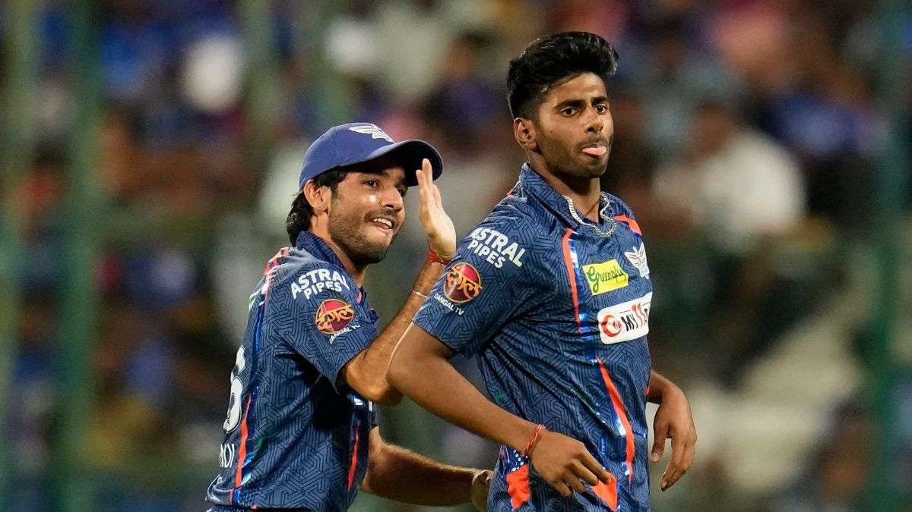

Lucknow Super Giants were forced to make one change to their playing XI after winning the toss against Delhi Capitals in the 26th IPL 2024 game on Friday. Mayank Yadav missed out on LSG's starting eleven and was replaced by the new singing Arshad Khan.
However, Mayank's absence didn't come as a surprise as the rising Indian bowlers suffered an injury in the last game against Gujarat Titans. Mayank walked back to the dressing room after bowling just one over against Gujarat and the franchise later confirmed a sore hip to the speedster.

"We will bat first," KL Rahul said. "I don't have an answer to that (good record batting first.) We want to start fresh, looks like a good wicket. I don't think dew is going to play a part. It (new pitch) has made a huge difference. You can bowl well, bat well, express yourselves, the boundaries are big and the bowlers enjoy playing here. The batters are enjoying batting as well. The three games we have played here have been packed. Arshad Khan comes in for Mayank Yadav."
Mayank, the 21-year-old right-arm pacer, took the IPL 2024 by storm having consistently bowled fiery spells in his breakthrough season. He picked six wickets in his first two innings to clinch back-to-back Player of the Match awards. He is expected to miss LSG's next two games and is likely to return to the CSK game on April 19.
"He felt a little bit of tightness at the top of his hip leading into the last game, but that was about a one-out-of-ten pain, and we thought that there were clinical signs," LSG head coach Justin Langer said on Thursday. "Everything through the doctors and the physios seemed perfectly okay. He bowled that first over (against Gujarat Titans) and started feeling something in his hip. But we had an MRI scan, and there is a very, very small swelling in there. So we are very hopeful he'll start building himself up and be back bowling again soon."